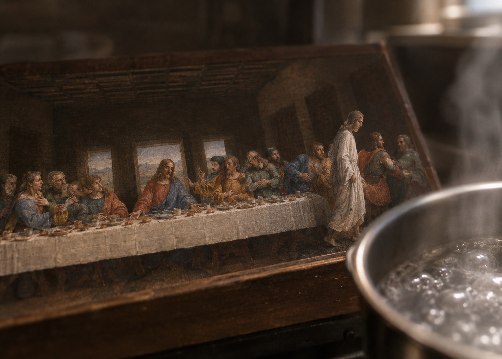

Vol2.004，受难者的焦点
我回到家时，是早上五点。原本我可以在四点之前回家，我走到楼下时，开始犹豫我要不要回去。回去了也不能睡觉，又要马上准备出门上班，不回去，觉得少了什么重要的事情没做。等到五点时，我刷卡进了单元门，上楼，我洗把脸，又要重新坐上地铁。我应该早点儿去坐地铁，这个时间坐地铁的人比较少，我可以在地铁上睡上一觉。
我洗过脸，上了厕所，我坐在沙发上，觉得要准备一点儿早餐。时间过得特别快，已经是六点了，这一个小时不知道是怎么过去的，我也没有做什么，我现在走到地铁站，时间会走到六点半，六点半是不可能有什么座位给我坐，我会一直挤上一个多小时的地铁。我也可以现在躺在沙方上，定上一个小时的闹钟，在七点出门，像往常一样，赶在九点前打卡。
当我真地躺在沙发上，我知道自己睡不着了。于是我起床准备早餐，煎一个鸡蛋，煮一壶水。我在厨房的墙上贴有一张世界名画：最后的晚餐，当然是缩小版的，宽度不过半米多一些，煮水时，我看着画里的受难者。水渐渐沸腾起来，我感觉画上的人在动。
这是因为我太累了，并不是画上的人真的在动。
我看了一会儿，受难者站了起来，他从人群的身后绕过去，他经过的人都回头看他，那些被称为彼得和犹大的人，我只知道这两个名字，他们一一回头去看受难者。
我看到手指高的小人儿在纸上走的时候，有一种精致的美感，好像能听到细微的脚步声。他走着走着，就走到了画面的边缘。
我不会把这些事情记下来发进荒原良社区，我想，我不会干这件事，它太虚假了。
我能听到水猛烈地沸腾着，我想看看这个受难者会走到哪里去，这个空间很小。他可以绕过人群，从后面走，那里有一道门，他走过门，再往远处走，把这些人留在餐桌旁。这是我的想法。
他也可以绕到桌子前面，像教师一样给餐桌旁的人讲课，讲点儿什么。
他只是从旁边走出去，从画里消失了。
画面上所有的人都回到静止的状态。我平时没有仔细看过这张画，我不知道其他人原本是什么样子。现在他们重新静止了。

我看着那些人的细节，即便是缩微版的，也是过于真实而感人的。
我曾经在小区里散步时，有一个人给我发了这张画，背后还写了一些我已经不记得的话，我想把它帖在厨房是正合适的。可没有想到，这张画现在自己变了模样了。
煮好水，我冲了一袋藕粉，一种喝起来像水一样的东西，我只有这个可以做早餐，加上一个鸡蛋，依然是没法吃饱的，但是医生让我少吃一些，尽量清淡一些。他说我的过多的饮食伤害了我的神经。我问过医生，如果吃得少，会不会营养不良，医生说会，但他劝我，不怕营养不良，怕精神失常。
我听出医生在调侃我，他以为我是一个疯子。
我很快吃完饭，我想起我为什么会这么狼狈。是因为我昨天在想怎样写一个帖子，怎样让它符合事实，又不像是低劣的编造，也不像那种歇斯底里的自证清白。我没有办法把帖子写到恰到好处的状态。我多次脑写草稿，没有一篇能够达到想要的效果，于是我遇到后来的奇事，就是错过了末班车，紧接着，遇到了一群不知道是四个还是五个的路人，然后我回到家，开始做早餐，见到受难者从画中消失。
我感到强烈的恍惚，似乎这里有一个不可能存在的结，一个无法打出来的结。
但我一时想不清楚这个结是什么。因为在我想清这个结是什么之前，我听到了地铁报站的声音，康家园站到了，到站乘客请准备下车。
车门打开时，我看着车门开始发呆。
我是要在这一站下车的。
车门感觉上开了很长时间，车厢里的乘客开始匆忙地出出进进，我发现在我和车门之间，挤满了人。我站起来，开始向车门挤去，人们发出不悦的声音，我没有时间解释，也没有时间说对不起，我听到关门的紧报开始播响了，车门很快就会发出晃动的关门声。
我挤出车门时，地铁门在我身后关上了。
我看了看手机，21点12分。
那一瞬间，我想到，我可以回家睡觉了。
我把这段话发给了李飞天。问：“这怎么样？够玄乎吧？”
“啊。蛮牛a。”
“什么意思？”
“牛啊！”
“你在嘲笑我吗？”
“不不，我是说你写的，像我。”
“你没有疑问吗？”
“什么？哪方面？”
“任何方面，你总该有点儿什么想法，看了这个东西。”
“我教你我的说法，你听听。你说的这些事，我没有经历过，我说出来我也不信。”
“那你说说，我听听。”
“我说了，我说出来我也不信。”
“你说说，我听听你说出来是什么感觉。”
“我说了，我说出来我也不信。”
“我知道，你说说，我听听。”
“……”
李飞天不说话了。
我看着聊天记录愣了一会儿。我没弄明白他是什么意思。他说他写了他也不信，他是什么意思？他……
他是说我吗？他不信，但我信。他说了他不信，因为他没经历过，但我说了我信，我也没经历过，所以我写不了联想命令。——我不知道为什么我的脑子里蹦出这么一句话来。
“你可怜我一下，用人话和我解释一下，你信什么，不信什么，为什么你不能说？”
“‘我没有经历过的事，我说出来了，我不会信。’没有更复杂的表达了，你能听懂吧？”
“但你可以说出来，我听听，也许我信了。”
“好，我不知道你为什么要信。你想听，我就给你讲。‘我的地铁要到站了，八点半的，但是，我睡着了，我醒来时，已经是凌晨一点，我睡在野外，在弹一个乐器，乐器发声的时候，我醒过来，发现那个乐器声，是地铁报站名的提示音，于是我下车回家了。’”
“这，你讲完了？”
“嗯。”
“你这讲的事，有幻觉吗？有怪异现象吗？能证明什么？”
“这不是我亲身经历的，我并不知道事情真的发生时会是什么样子的。只是你必须让我讲，我才讲给你听。”
当我还想继续向他追问什么时，他说：“我会把真实的故事告诉你，你听，是这样的。”
他继续说：“我的确是错过了地铁末班车。我的确在一个离家很远的地方下的车。我可以把‘的确’二字拿掉，这样就不像是自证清白了。但在我们交流起来并不重要。”
我隔着屏幕点头，他继续发来消息：“我的确看到那几个人，也的确走了很远的路才到家，只是我没有在楼下犹豫，我很困，我直接上楼就倒在沙发上。没有定闹钟，我很快就睡着了。我从四点半睡到了七点，算是补了两个小时的觉，然后洗把脸又去坐地铁上班了。”
“可是这里什么幻觉都没有啊？”我问他。
“至于幻觉，和你说的一样，我在八点半准备下车，我下车后，忘了一件事，又想回去拿，可是车门已经关上了。我可以找站台服务员来完成这个事，让他们联系正在运行的地铁工作人员去帮我把东西取回来先存着，现在并不是特别高峰期。可我找不到工作人员，我发现地铁上人很少，只有我一个人，我出站的时候，一个人也没看到。他铁的卷帘门还没关。我出了站，刚走出去，就听见哗啦啦响，卷帘门在我身后关上了。”
本文信息
相关文章
- Vol2.007，算法的感觉2026-10-22
- Vol2.005，平庸者的时间压缩机2026-10-20
- Vol2.003，他们不是喝酒烤串的青年2026-10-19
- Vol2.002，礼非天，或是李飞天2026-10-17
- Vol2.001，作为暗号的关键词2026-10-15